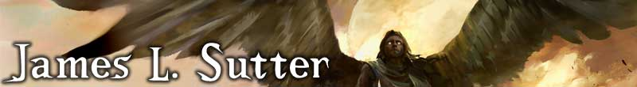

<div id="headImage">
  <a href="./index.html" title="home" alt="header">
  </a>

  <div id="headSocialIcons">
    <a target="_blank" href="http://twitter.com/jameslsutter">
    </a>
  </div>
  <div id="navMenu">
      <div id="mobileMenu" style="text-decoration: underline; color: white;">--</div>
      <div id="menu">
        <ul>
          <li><span class="noLink"><a href="#">Writing</a></span>
            <ul>
              <li><a href="./novels.html">Novels</a></li>
              <li><a href="./shortFiction.html">Short Fiction</a></li>
              <li><a href="./gaming.html">Tabletop Games</a></li>
              <li><a href="./videoGames.html">Video Games</a></li>
              <li><a href="./comics.html">Comics</a></li>
              <li><a href="./nonfiction.html">Nonfiction</a></li>
            </ul>
          </li>
          <li><a href="./teaching.html">Teaching</a></li>
          <li><span class="noLink"><a href="#">Music</a></span>
            <ul>
              <li><a href="./brides.html">Brides of the Lizard God (2013+)</a></li>
              <li><a href="./shadow.html">Shadow at Morning (2006-2010)</a></li>
            <li><a href="./dyfd.html">Do Your F***ing Dishes (2012)</a></li>
              <li><a href="./jackrabbit.html">Jackrabbit Beats (2018+)</a></li>
              <li><a href="./byLand.html">By Land or By Sea (2007-2009)</a></li>
              <li><a href="./slamdaddy.html">Slamdaddy (2000-2003)</a></li>


            </ul>
          </li>
          <li><a href="./bio.html">About</a></li>
          <li><a href="./contact.html">Contact</a></li>
        </ul>
      </div>
  </div>

  <br class="clear" />
</div>
